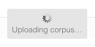
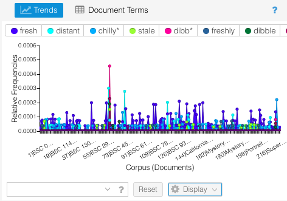
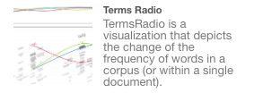
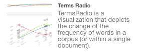

DSC #6: Voyant’s Big Day¶
by Katherine Bowers, September 15, 2020

If you’ll pardon my late 90s/early 2000s turn of phrase, I’d describe myself as a DH n00b. In the Data-Sitters Club, my n00bness is helpful in that I’m usually the one that asks for clarification about terms or how to break processes down into smaller tasks or notices when we’ve missed a step. Long before Quinn had her great idea and Lee, Maria, Quinn, Anouk, Roopsi, and I came together to form the Club, my first exposure to DH was Voyant. I have a lot of affection for Voyant and I think my story is not unique. Voyant has been a first DH step for a lot of people. And so, today, Voyant’s Big Day, let’s talk about Voyant, what it is, how it works, and what you can do with it as a researcher or as an instructor.
Voyant Tools is a web-based suite of tools for digital humanities text analysis. It was developed by Geoffrey Rockwell and Stéfan Sinclair in 2016. If you upload some text into it, it will create a series of visualizations that can help you get a new perspective on the text for interpretation and analysis.
The visualizations can be roughly categorized as tools that count word frequencies, tools that show how words appear in context in individual texts, and tools that look at ways words appear across a corpus of texts. The visualizations include lots of line graphs, charts, etc., but also things like word clouds, bubble lines, and knots. In DSC #4: AntConc Saves the Day, Anouk theorized that AntConc was the kid kit of DH, but in this book, I want to make the case for Voyant being the kid kit of DH. But I am getting ahead of myself….
When you go to voyant-tools.org, the first thing you will see is this:

That’s it. It’s simple, clean, and intuitive. What’s the first thing you do when you want to work with Voyant? Well, obviously you feed some text into it: you can copy/paste whatever text or links to texts into the text box, click “open” which gives you the option to choose preloaded corpora (either Shakespeare or Austen), or upload your own files.
Now I love Jane Austen, but today we’re going to see what Voyant can tell us about the Baby-Sitters Club books, so I click upload. Voyant will accept a lot of different kinds of files: plain text, MS Word, .pdf, .rtf, .html, and .xml. I select the individual files of our cleaned up .txt Baby-Sitters Club corpus (to learn about how we created our corpus and how you can create your own, read my previous BSC opus, DSC #2: Katia and the Phantom Corpus), hit open… and then I wait. It takes some time to upload a corpus as large as ours!


When we were talking about this book in our last Data-Sitters Club meeting, Maria mentioned that she does an assignment in her LIT 135 class “Falling in Love” that incorporates Voyant. First, Maria asks her students to collect personal ad texts from various sources and clean them up. Then she assembles a corpus of them. Next she asks students to do a close reading of the corpus. And, finally, she asks them to use Voyant to do a distant reading of the corpus. I think this project is great in that it walks students through building a corpus, thinking about data, practicing both close and distant reading, and analyzing visualizations.
Maria’s students are able to consider the advantages and disadvantages of close and distant reading, why you might do one or the other, and what kinds of questions each is best at addressing. Voyant, in particular, is good for getting students to ask specific methodological questions for analyzing a corpus or text. Some of the questions, just to start, might include:
Is close or distant reading the best approach for the questions you have?
Is the corpus complete? What are the characteristics of the corpus? What’s missing?
How does the data skew? What’s skewing the data?
Forming and articulating these questions and then analyzing the resulting visualizations can be really helpful for students’ critical thinking.

As the “uploading corpus” circle slowly circles around, I start thinking about the kinds of questions that Voyant can help answer:
What words appear frequently?
How do they appear in the corpus? (What trends are there? What words appear in what context?)
What topics appear in the corpus?
How do texts cluster together?
What you’ll notice if you’re familiar with AntConc (throwback to DSC #4) is that many of these questions are similar to things you can learn by using AntConc or another concordancer. Voyant in fact includes a concordancer, but also has a number of other tools that visualize the text’s word frequencies and contexts in ways that AntConc can’t. What questions do I want to ask Voyant?

Suddenly the box changes to “fetching your corpus.” Finally! My corpus upload has finished and a colorful, crowded, and admittedly pretty overwhelming page featuring five default visualization tools opens.

Going clockwise, we have Cirrus, a word frequency cloud; Reader, which displays the searchable full text of any one text in the corpus; Trends, a line graph that shows the distribution of words across the corpus; Contexts, a concordancer; and Summary, which gives helpful details about the corpus.
First I look down at Summary. I can see here that all 225 of our BSC corpus .txt files are included and there are just over 6 million words. That’s a lot of Baby-Sitters Club! As summary shows, the BSC series includes the longer Super Mysteries and Super Specials (which tend to be 2-3x the length of the regular books and mysteries) as well as shorter books in adjacent series like the California Diaries spin-off series and the Friends Forever books that came after the main series. Voyant analyzes relative frequencies, not just raw word counts, in order to adjust for imbalances in document length, so it will automatically take into account the fact that some books are longer than others. I’m surprised that the BSC prequel The Summer Before is as long as it is, though. It definitely didn’t seem that long when I read it.
Each tool slot has some other options for what you can display in it – these are the other options on the tool header bars. If I select Documents, I get a chart that shows the stats for the individual texts in the corpus:

In the Cirrus slot, for example, you can choose to display the Terms tool or the Links tool instead by selecting the appropriate tool name in the header:

You can select other tools to add by clicking on the windows icon that appears third from the right when you mouse over the header of a tool. (At the time of writing, Voyant included 24 different tools):

Those other menu options are (from left to right): embed/export (the open mark), other tools (the windows mark), options (the toggle mark), and help (the question mark).
If things are cramped or you just need to focus on one visualization tool, you can also adjust the sizing and order of the tools that appear by clicking between the tools and dragging to resize or move.
Now it is time to get analyzing! I start with Cirrus because the word cloud is a pretty common easy visualization and, to be honest, it’s the thing my eye is drawn to first on the screen. The cloud tells us that the most frequently used word in the corpus is “said” and that Kristy and Mary Anne’s names appear more frequently than Stacey, Dawn, or Claudia’s. We can also see that there’s been some filtering of the corpus.
Voyant automatically filters out “stopwords” from its visualizations. What are these? They are common small words that appear frequently and can dilute word frequency results.
For example, here, on the left, is the word cloud Voyant created by auto-detecting and filtering stopwords, and on the right is the word cloud with the stopword filtering switched off.


That’s a pretty big difference! One difference between AntConc and Voyant is that AntConc doesn’t filter stopwords. You can customize Voyant to add more nuance to the visualizations and one thing you can do is edit the stopword list. When is it useful to edit the stopword list? For example, if you’re looking for the most frequent words in the BSC Mystery series, you might want to add the character names to the stopword list so you can more easily surface things like GHOSTS or JEWEL THIEVES without Kristy, Mary Anne, and Claudia getting in the way (as adept at sleuthing as they are).
If you mouse over the Cirrus header, some additional menu items will appear:
Clicking the toggle icon on the right next to the question mark will open a window that gives you a lot of different options to make adjustments to what Cirrus is displaying:

Here you have the option to use the auto-detected stopwords, change the language to a different one (with a preloaded set of stopwords), edit the stopwords list, turn off stopwords, or add your own list of stopwords. Next to the stopwords menu options is a check box next to the words “apply globally.” Checking this box tells Voyant that you want to use your stopwords selection in all the tools for your session. Unchecking it will mean you can set each individual tool’s stopwords list to be different.
In addition, from this pop up you can make some aesthetic adjustments, like change the font or select a new color palette, whitelist words (create your own customized list of which words are shown), and build categories.
I click “edit list” next to White List to add a custom white list of just the names of the BSC members and my Cirrus visualization changes to show just these words, sized by frequency of appearance in the corpus. Note that Cirrus won’t recognize blank spaces, so “Mary Anne” won’t register as a white list term and must be entered as two: “Mary” and “Anne.”

This view basically confirms what the non-white listed word cloud showed. Compared with the other BSC members, Kristy and Mary Anne appear slightly more often than Claudia, Stacey, and Dawn do. And the others who hadn’t even registered on the first word cloud definitely appear less often. At the end of the day, though, the fact that Abby (who first appears in BSC #89 Kristy and the Dirty Diapers) or Shannon (an associate member who rarely appears in the series) don’t appear as often as the others isn’t that surprising or interesting.
A question that’s more interesting is: what can Voyant tell us about the BSC slang?
One of the very memorable aspects of the BSC books for those of us who read them as kids is the peculiar slang words that the series introduces. At our early Data-Sitters Club meetings, we reminisced and joked a LOT about this slang. The ones I remember the best are “distant” (meaning cool) and “dibble” (which kind of combines a superlative with cool). “Dibble” even has its own Urban Dictionary entry. But what’s struck me on my (analog) reread of the series so far is that the slang isn’t nearly as prevalent as I remembered it being.
The first word of BSC slang (“fresh”) doesn’t even appear until BSC #36 Jessi’s Baby-Sitter. Each word is defined the first time it is used as if the writer needs to convince the reader it is viable slang. One of the reasons this is so weird is because the slang words are introduced, one by one, defined, and described as something that BSC members “always say.” But when you have been devouring these books for years (as I had by the time BSC #36 came out), this rings false. Jessi may think that Claudia’s been saying “fresh” for years, but you know she hasn’t been at ALL.
In the BSC bible, the guide that collects BSC facts to make sure all the series’ ghostwriters are on the same page and the books stay consistent, only two slang words are mentioned. The bible states: “Club uses the word ‘dibble’ to mean cool (#54-p.17). ‘Chilly’ means mega-cool (M#8-p.37).” I’ve been keeping a list of the words as I read through the series, though. They include a bunch of synonyms for varying degrees of cool (“fresh,” “distant,” “dibble,” “acute,” “chilly”) and the word “stale” as a synonym for uncool. There are more, but these six are a good place to start.

Taking a note from Mean Girls, I refine my question. What I’d like to know is whether the BSC (or, more accurately, Ann M. Martin and the BSC ghostwriters) actually made any of these slang words happen. And, if so, which and how often? Can Voyant help me find the answers?

Adding the slang words to the white list, I can already see the first problem I’m going to have to address. “Dibble” and “dibbly” appear so small here because they are only used as slang words, whereas the other words on the list are most frequently used outside of a slang context. For example, when Dawn is talking about fresh seeds, or Claudia is chilly and puts on a sweater, or Stacey feels like someone close to her is acting distant.
Cirrus is clearly not the best tool for this, so it’s time to move on.
I click on Terms, another tool available in the Cirrus slot, and a table of term frequencies across the entire corpus appears. This tool uses the same auto-list of stopwords as Cirrus and has the same options for white listing, modifying, etc.

The terms are listed in descending relative frequency order. The next column shows the total count of appearance. The final column shows a line graph of relative frequency across each book with highest and lowest frequency marked.
Clicking on the question mark in the upper right corner opens a help window that describes the features of the tool, how it can be customized, and what additional columns are possible.

I type the six slang terms I’m curious about in the box at the bottom of the Terms window and now things start getting interesting as the visualization populates with the data. I notice that, when I start to type “dibble,” several other variants come up: “dibb*,” “dibbly,” “dibbleness.” These are clearly all slang terms, so I add all of them. I also add “freshly” for good measure. Technically I could have just added “dibb*” since that final asterisk denotes that this will bring up all things “dibb” (anything beginning with “dibb”), but I was curious about how the various manifestations of “dibbly” appear in the text.

I also notice that some of the other visualizations have been updated to focus on the six slang terms. Contexts, the concordancer, has pulled up the in-text contexts for each use of the terms.

Contexts is kind of like a lite version of AntConc. It can’t do all the things AntConc can do, but as a tool that works harmoniously in tandem with the other Voyant tools, Contexts is really helpful. It shows the term, the stuff that appears to the left and right of it in the text, and which text it appears in.
The communication between tools and ease of shifting between tools is one of the places where Voyant really shines. Although the interface seems kind of crowded, when you start using it for a specific inquiry, it becomes an intuitive system where you naturally go to the tool you need next for the questions you’re interested in. Voyant really underscores the exploration and experimentation aspects of DH inquiry and gives you an easy to set up, customizable sandbox-y space to play with texts and see what happens. As I said, I have a lot of love for Voyant. And this room for play is one of the reasons why I really think that Voyant deserves the title of “kid kit of DH.” I could wax poetic on this a lot more…
But I really should get back to the BSC and their slang! In Terms, I can see that there are a LOT of instances of “fresh.” By using Terms together with Contexts, I can see that some of these are the normal use of “fresh” (as in “Maybe they were just really fresh seeds”) and some are slang uses of fresh (as in “That is so fresh,” “pretty fresh sweatshirts,” “Claudia and Stacey are pretty fresh themselves,” and “she’s fresh.”).
I can’t quite see the full context for this last one, but I assume it’s slang (unless they’re talking about her new deodorant or something, but that doesn’t seem likely). If I click on the expander sign in Contexts, a snippet of the full text appears.

But! When I highlight that line in Contexts with my mouse and click, the Reader tool goes right to the exact place in the corpus and shows the full text. This way I can check out more of what’s around the term. This is definitely BSC slang, and you can see that it includes the kind of planted definition and history of the term when it is introduced. “Fresh” here means “so cool” and this is something Claudia has been saying for awhile.
Actually, I can tell from the first column of Contexts that these five instances of “fresh” are all from BSC #36 and so I know (from my previous, ahem, research) that this is the first time this instance (or any instance) of BSC slang has been introduced in the series.
One thing that’s interesting in Terms is the line graph that shows where in the corpus each term appears with the highest and lowest relative term frequency. Running my mouse over each line, I can see which books map to which points on the graph. When I mouse over the high point for “fresh,” I see that it appears with the highest relative term frequency (145) in BSC #38 Kristy’s Mystery Admirer.
Now I’m curious: are these instances of the slang use of “fresh” or does Kristy just have a lot to say about fruit in this book? I select “fresh” in Terms, go down to Documents, find BSC #38, and select it. Suddenly all of the tools are focused on “fresh” in this particular book.

And I can see there precisely two instances of fresh in BSC #38 and neither of them is slang. Well, that wasn’t that helpful. What might be a better approach here is to look at all the slang terms relative to the books they appear in and see what patterns emerge. I click the boxes next to all the words in Terms and they appear one by one at the top of the Trends window and now I can see this visualization:

It’s pretty cramped and cuts off a bit, so I drag the edges of the tool and resize so I can see more of it.

Now that’s more like it! And here I can see some weird things going on, namely that huge spike of “dibb*” that towers above all the other words. What IS that? Hovering over it with the mouse lets me know that this is BSC #39 Poor Mallory. Notably, this is the book that introduces the slang word “dibble” and I can see from this that Martin (this book wasn’t ghostwritten) goes a little wild with it. Isolating just the “dibb*” words makes it even easier to see where it is. I click on each of the non-”dibb*” words in the top boxes and one by one their lines disappear from the graph.

Words in the “dibb*” family crop up in a few other books (#41, #47, #54, and Super Special #5) and then it disappears. Notably, 3 of these 5 books are narrated by Mallory. I wonder: is Mallory also the main source of “dibble”-speak in #41 Mary Anne vs. Logan and in Super Special #5 California Girls? To find out, let’s check with Contexts. I go back to Contexts, click “scale” at the bottom, and tick all 5 dibble-heavy books. Then I enter “dibb*” in the bottom box and the visualization populates.
Reading through the context for the first four uses of “dibble” in #39, we learn a lot: dibble is short for incredible; another word for dibble is distant; the opposite of distant and dibble is stale. It’s a lot! As I go through more instances of dibble in #39, I see it can be used superlatively (“She is so dibbly sophisticated and chic,” “That’s dibbly great!” “I should have been dibbly happy…”), as a neo-neologism (“Her jewelry, it’s the height of dibble-dom”), and as a title (“Stacey is the Queen of Dibbleness”). It seems that “dibbly” can be applied to uncool situations as well - Mary Anne’s father is described as “dibbly strict,” Mallory sighs that having a mom who speaks her mind can be “dibbly horrible” (you don’t deserve that, Dee Pike!), and there’s a “dibbly disgusting” overheard conversation. Mallory is working hard as a narrator to make dibble happen.
But what about the later books? There are 19 total instances of “dibb*” in the corpus, and of them, I can see that 12 are from #39. Of the others, going in chronological order by publication date, 3 instances appear in Super Special #5 California Girls: 2 of these are narrated by Mary Anne (1 use of the word and 1 definition of it) and last is narrated by Claudia. In #41, the next instance is narrated by Mary Anne (she mentions “dibble” as a slang word used by the BSC members - see the text below, which I include because the 1991 fashion descriptions are ahem dibbly distant):

I also find it really funny that the only time “dibble” appears in #41 is when it is defined. Then it’s dropped like it’s stale. The next instance of “dibble” is in Claudia’s reported speech in #47 Mallory on Strike, and a second instance appears in the same sentence as Mallory defines what “dibble” means: ““‘Chez Maurice has the most dibble food.’ (Dibble is a word we made up that means incredible).”” The final instance is Mallory again reporting on Claudia’s nickname for Stacey (“the Queen of Dibbleness”) in #54 Mallory and the Dream Horse - although, suspiciously, the only time we hear this nickname is when Mallory mentions it. Claudia never does. Can we trust Mallory as a narrator?
Looking at the evidence, I’d argue that Mallory tries and fails to make “dibble” happen. Mary Anne kind of half-heartedly mentions the term a couple of other times - 2 of 3 instances are just the definition of it - and Claudia uses it only once. Mallory reports that Claudia says it all the time and mentions a few things she says, but it seems like the main person who is using dibble in the series is Mallory. And by Mallory and the Dream Horse, the dream of dibble is dibbly, dibbly dead.
So dibble didn’t happen, but what about the other slang words? Acute, distant, stale, fresh, chilly? What of them? First I click on Links in the upper left tool space. This is a collocates graph, a network graph that shows links between keywords and the words that appear in close proximity to them in the text. Maybe this will help me visualize how the BSC slang words cluster together. I add my words one at a time to the word box in the lower left… and the visualization that pops up hits me over the head with a super obvious thing that I had overlooked.

Yeah, I am clearly dibbly forgetful. The thing that unites all of these slang words is that they are synonyms or antonyms for “cool” and are usually defined by the word “cool” in context. Cool also appears much more frequently in the corpus than all of the other slang words combined.
When I add “cool” to the Trends window, I get this:

It’s true that “cool” can mean emotionally reserved or a temperature, but a substantial number of instances of “cool” in the series just mean “cool” in the slang sense. It seems to me that in 1990-92, there was a push to try to make BSC-specific slang words happen, and this push failed. They were incorporated a little into the series, but mostly the BSC members just use the word “cool” to mean “cool” - although they profess to use “distant,” “acute,” “chilly,” “dibble,” and “fresh” - and they DO use these words occasionally. In the end, the coolest option is just cool.
I head to the Voyant List of Tools to see what kinds of tools might work for doing something that looks at word clusters and frequencies and see if I can figure out how often these definitional word clusters appear in the corpus and when they fade out… The List of Tools has a few things that sound promising:
 


But this book is already creeping up in length and I am not sure these visualizations will do more than give me the same answer with more nuance. I think I’ll end here. But I hope this has demonstrated that Voyant includes a rich collection of tools and there is really so much more to explore on the site! I didn’t even get to the tools involving BUBBLES!
Once you’ve imported your corpus or text, used the visualizations to address your research questions, and done your analysis, you might want to export or embed your Voyant Tools session. If you mouse over any tool header, the extra options will appear. The fourth from the right is the export/embed option. If you click it, a window pops up with a lot of different options:

You can generate a URL that anyone can use to look at and engage with your dataset and the tools you used; export tools and data either as an iframe HTML snippet, a bibliographic reference, or a Spyral notebook; or export just the data (current or all) as HTML, tab separated values, or JSON. These options give you a lot of choice as to what you do with your data and are aimed at preserving and creating a record that can be used in scholarship, journalism, or other fields. You can embed interactive evidence in an article, blog post, journal, or other website to demonstrate your results, include a reference in an article or book as a source, or just send users/readers to Voyant to play with your data themselves.
Voyant’s Big Day has just scratched the surface of what you can do with Voyant and I haven’t really gone into most of the tools or some of the fancier things you can do. We’re planning to delve further into Voyant’s more advanced features in future DSC books. But! In the meantime, you too can celebrate Voyant’s big day by trying it out yourself!
Dear Reader¶
When you encounter a tool, it’s easy to forget that it’s something that someone made. All the infuriating quirks of Microsoft Exchange, or your institution’s learning management system, are the result of choices that real people made. Unlike large commercial software packages, DH tools tend to be a labor of love on the part of a single person or a small group of people – not distant and anonymous, but people you’ll likely encounter in other contexts, at conferences, or through their scholarship.
Stéfan Sinclair created Voyant. With the assistance and feedback of others over the years, but he was the one who raised it from its origins as HyperPo, through its “awkward teen years” as Voyeur, to become the Voyant that is so widely used today.
Stéfan passed away on August 6, 2020, as Katia was drafting this book. Those of us who knew him, even in passing – Anouk, Lee, Quinn, and Roopsi – were in shock.
Anouk met Stéfan at the 2010 DH conference in London, where he was organising the ACH’s mentoring programme and a mixer event for newer and more established scholars. He was genuinely interested in both the work and the professional prospects of the early career scholars at that event, which she found extraordinary, having never encountered it at any conference in her own discipline. As so many others have said, Stéfan’s generosity and his disregard for the hierarchies that structure so much of academic life were remarkable. She remembers very clearly walking out of the conference jobs slam that he organised at the London conference and thinking: this field, in which senior people are actively demonstrating that they care what happens to junior people trying to survive in the dumpster fire that is the academic labour market: this is where I want to spend the rest of my career.
Lee and Stefan shared that they were from the same province, and could speak the same language together. Stefan didn’t care where you were from or what you were working on, he always wanted to see you be able to do the best work possible. He helped Lee OCR a French book, but was also interested in why she wanted to OCR the book and what she was planning on doing with it. He fed off of your enthusiasm for a project, and would do whatever he could to help your vision become a reality. This was seven years ago (!!!) but Lee will never forget how unfailing generous Stefan had always been, and the blog post stands as a “permanent” reminder.
Roopsi had the opportunity to work with Stéfan when she joined the Association for Computers and the Humanities executive board and Stéfan was rising president. At a very contentious time for work on colonialism and race in digital humanities, Stéfan was rare among the well-established digital humanities scholars for listening with an open mind and generously offering support and mentorship. The most memorable moments, by far, were quiet and unhurried ones sitting outside at conferences chatting about the possibilities for the future of digital humanities. Stéfan’s kindness and advocacy was greatly appreciated, not only by Roopsi but by the other scholars of color in her cohort.
Quinn had been in touch with Stéfan about Voyant over many years. Her last exchange with him was just a month before his death, after filing some bug reports on his code for Spyral notebooks, which generate embeddable Voyant visualizations with more transparent configuration. As usual, he replied within minutes. She mentioned that the Data-Sitters Club was writing their next book on Voyant, but had decided to start with an introduction and introduce Spyral in a later book, so no rush on the code tweaks.
Quinn had no idea he was weeks away from hospice.
Stéfan is hard to memorialize because he was good at too many things. Being the developer and maintainer of one of the best-known and longest-running DH tools makes him a major figure in the development of meaningful DH infrastructure. He loved Voyant, and worked on it until the end. But it wasn’t just the code: in the wake of his death, so many stories emerged about how Stéfan really listened when people critiqued Voyant. He did this with everyone, not just people with institutional power or status. He always wanted to understand the issues people were seeing, from the language of the UI, to mobile accessibility, and even the name of the tool – and he wanted to make it better. He brought that same attention, care, and thoughtfulness to his work as a teacher; Catherine Nygren, one of his grad students, wrote movingly about her experience of working with Stéfan: “Part of the reason I’m still doing this PhD is because he believed I could do it, but that I only had to do it if I wanted to. No matter what I wanted - academia or getting the heck out of dodge - he was there to support me… But when I think of Stéfan, I’ll always picture him at his desk, Montreal behind him, that tree branch squeaking on the window, as he puzzled out just why the heck my code wasn’t working. And I’ll remember how much lighter my step was when I left.”
At an impromptu get-together the night the news of Stéfan’s death went public, Stephen Ramsay, another senior DH scholar and friend of Stéfan’s for over 20 years weighed in: “It’s easy to be a gatekeeper. We all like to think that we’re above it, but it’s a potentially successful career move and an easy one, and there’s good reasons to mark off an area. I don’t think he ever did it. It was always, a bigger tent, more inclusion. I think he honestly, really didn’t care who was a professor and who wasn’t, and who was a staff member, and who was IT, and who was a student. And that’s an achievement.”
Tools are more than mechanistic implementation of algorithms, as Critical Code Studies would point out, but you can get to the same point from a different perspective if you knew Stéfan and you experience Voyant. “Anyone who sees cold numbers or a chilly distillation of the written word couldn’t possibly know Stéfan. He lived for the playful, beautiful, lovely, surprising, weird, and he wrote that into his tool. If we’re going to point to something, let’s point to something that’s loads of fun and gives a sort of scintillating joy, that’s what Voyant has always meant to me,” said Stephen.
The institutionalization of DH through programs and degrees and grants makes it easy to lose sight of what it means, fundamentally, to be a field. As Stephen framed it, “it’s a group of people in conversation with each other. It’s not an abstraction; we’re not citations, we’re people.” We hope that this book has given you a place to begin with Voyant, and in doing so, start your own playful, beautiful, lovely, surprising, and weird conversation with this tool he has left us.
Suggested Citation¶
Suggested citation: Bowers, Katherine. “DSC #6: Voyant’s Big Day.” The Data-Sitters Club, September 15, 2020. https://datasittersclub.github.io/site/dsc6/.